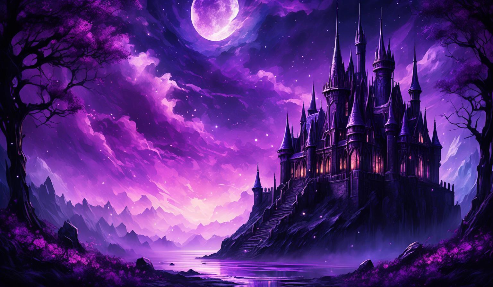

Bem-vindo ao Geek Nexus
Entre em um universo onde games, fantasia, tecnologia e cultura geek se encontram. Descubra histórias, explore novos mundos e conheça diferentes formas de entretenimento.
Explorar o universo geekUm universo além da realidade

O Geek Nexus é um espaço dedicado aos apaixonados por jogos, animes, mangás, filmes, séries e cultura geek. Nosso objetivo é apresentar diferentes universos que despertam a criatividade e a imaginação.
A cultura geek está presente em diversas formas de entretenimento. Ela conecta pessoas por meio de histórias, personagens, tecnologias e experiências que conquistam fãs em diferentes partes do mundo.
No universo dos games, cada partida pode representar uma nova aventura. Existem mundos fantásticos, desafios estratégicos, histórias envolventes e personagens que permanecem na memória dos jogadores.
Nos animes, mangás e produções audiovisuais, encontramos narrativas que exploram amizade, mistério, fantasia, ficção científica e muitos outros temas.
A tecnologia também faz parte desse universo, contribuindo para a criação de experiências cada vez mais interativas e imaginativas.
Dos cenários medievais aos mundos futuristas, sempre existe algo novo para conhecer. Cada conteúdo apresenta uma oportunidade de explorar ideias e descobrir novas histórias.
Explore nossos universos
O Geek Nexus reúne diferentes conteúdos para quem deseja conhecer melhor o mundo geek. Escolha uma categoria e comece sua exploração.
Games
Conheça o universo dos jogos digitais, suas histórias, características e a evolução desse importante meio de entretenimento.
Conhecer GamesCultura Geek
Descubra diferentes expressões da cultura geek, incluindo animes, mangás, tecnologia, filmes e comunidades.
Explorar CulturaUniversos Geek
Viaje por mundos de fantasia, ficção científica e histórias que transformam a imaginação em experiências inesquecíveis.
Descobrir UniversosMais do que entretenimento
A cultura geek representa criatividade, conhecimento e diferentes formas de expressão. Por meio de jogos, histórias e produções artísticas, podemos conhecer novas ideias e perspectivas.
O Geek Nexus foi desenvolvido para reunir informações sobre esses assuntos em um único espaço, com uma navegação simples e organizada.
Explore cada página, descubra novos conteúdos e aproveite essa jornada por universos que vão muito além da realidade.